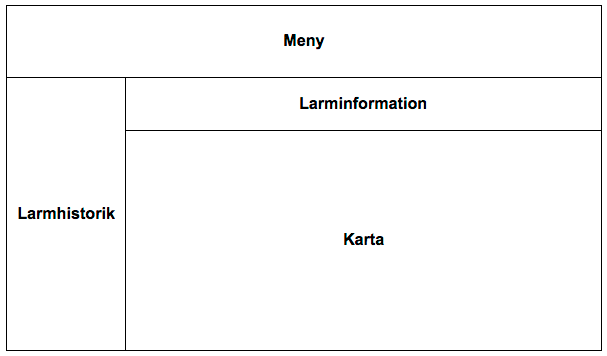

-
Larmlista
Längst upp finner du menyn och rubrikerna i larmportalen. Larm listas till vänster i larmhistorik, tillhörande karta och larminformation visas till höger.
 - Grön - Larmet är avslutat
- Gul - Larmet är aktivt och accepterat av någon larmmottagare.
- Röd - Aktivt ännu inte accepterat av någon larmmottagre
-
Larminformation
På larmsidan ovanför kartan visas fyra flikar med information om larmhändelsen. Info, Video, Personuppgifter & ICE-kontakter.
- Information om tid och plats då larmet aktiverades, namnet på larmbäraren och den aktuella adress då larmet aktiverades. Till höger ser man även när ett larm accepterats och av vem.
- Video - Video i realtid, tvåvägskommunikation.
- Personuppgifter - Uppgifter om larmbäraren, fylls i via appen (valfrittt).
- ICE-kontakter - Uppgifter om In Case of Emergency-kontakter, fylls i via appen (valfrittt). -
Användare (larmbärare)
Här kan du registrera användare, ett sms skickas till larmbärarens telefonnummer med information hur man laddar ner Alerty och loggar in i appen. För att skapa en användare, fyll i namn och telefonnummer. Tryck sedan på Spara. Varje användar-ID är unikt och bundet till det aktuella företaget.
StatusStatus Visar om Alerty-appen är igång och ansluten till internet. Om appen skulle stängs ner försöker den automatiskt att starta inom 600 sekunder. Om appen inte återanslutningen inom 675 sekunder ändras statusen till ”Offline”.
- Online: Alerty är igång och ansluten till internet.
- Offline: Alerty är avstängd eller att internet anslutning saknas.
Anslut: Klicka på knappen för att skicka ett meddelande till användaren om att öppna Alerty för att ansluta.
VersionVisar vilken version av appen som är installerad. Ingen app installerad Användaren har inte installerat Alerty-appen alternativt har användaren bytt användar-ID.
Programuppdatering: Klicka på knappen för att för att skicka ett meddelande till användaren om att uppdatera appen. -
Kontakter
En kontakt som läggs till från larmportalen kommer att stå som larmmottagare i appen i gruppen Företagsgrupp. Användaren av appen kan inte ta bort dessa, dessa kan bara tas bort eller ändras via larmportalen.
För att lägga till en ny kontakt, fyll i namn och telefonnummer. Tryck sedan på spara. Observera att alla nummer måste läggas till med internationell standard. Exempel: +46701234567 -
Wlan
Med ett ”WIFI” förbättras noggrannheten på positionen när man befinner sig på en plats där GPSen saknar täckning. Här sparar/ändrar man router/accesspunkter som användas för inomhuspositionering. För att lägga till ett wlan, fyll i en beskrivning av wlanet samt routerns BSSID (MAC adress) i listan till vänster. Tryck sedan spara. Efter det ska du välja wlanets position på kartan. Alla wlan visas även i appen. Wlan som sparas i appen då man valt att spara som företag visas och kan ändras här.
-
Inställningar
Här väljer man en plats där larmportalen befinner sig. Platsen används för att beräkna avståndet (fågelvägen) till larmbäraren.
-
Arkiv
Här visas arkiverade larm man inte längre vill visa i den aktuella larmlista. För att arkivera ett larm, välj ett larm och tryck på ikonen som föreställer en låda. Man kan på samma sätt avarkivera de larm som visas i arkivet.
Larmhistorik
Det första du möts av när du loggat in är det senaste larmet. Till väster visas larmstatus, när det är startat och vem som har skickat det.
Larmstatus har tre olika färger:
Karta
Då ett larm är aktivt har kartan visas hur länge larmet har varit aktivt samt ett avstånd mellan mobiltelefonen och datorn där larmportalen används, avståndet som anges gäller fågelvägen.